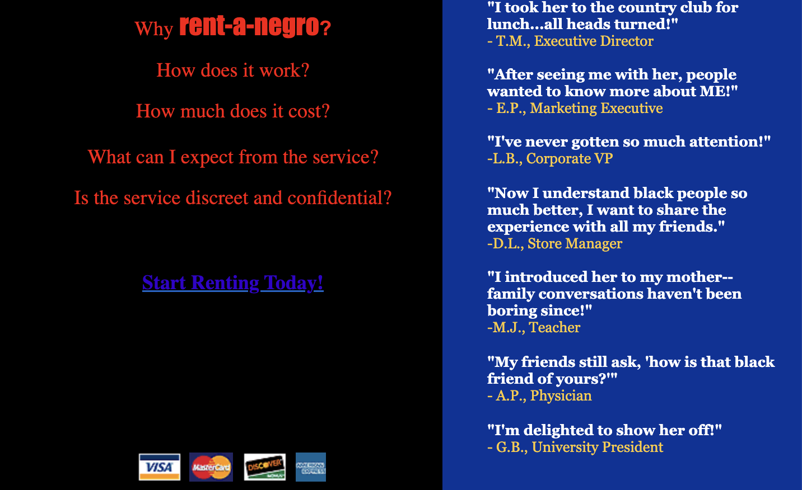
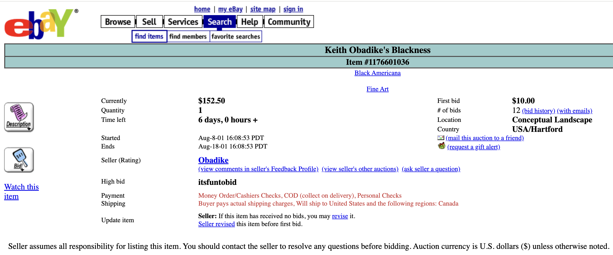
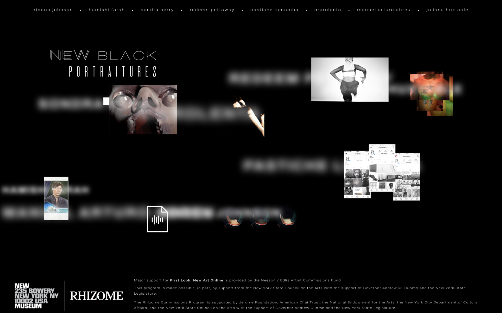

Rent-A-Negro is satirical net art that presents a fictional service renting a Black person to clients for social or cultural capital. This exposes the ongoing objectification and exploitation of Black people and labor online.
Damali Ayo is a multidisciplinary artist and writer whose satirical, socially engaged works confront racism, cultural appropriation, and everyday racial dynamics. She created conceptual art from 1997 to 2017.

Keith Obadike put his “Blackness” on eBay for sale. This criticizes how Black identity and culture are commodified, presenting “pros and cons” of blackness to expose societal stereotypes and the reduction of Black people to cultural capital in digital and capitalist spaces.
Keith Obadike is a sound and multimedia artist whose work examines race, digital culture, and the complexities of online identity. His practice spans internet art, sound design, and conceptual projects that challenge how Blackness is represented and commodified.

Keeping Up Appearances is a minimalist hypertext net art piece that reveals hidden text when the cursor hovers over the screen. The hidden lavender text and black text together reveal Mendi Obadike’s uncomfortable and unequal experiences as a young Black woman.
Mendi Obadike is a poet, scholar, and interdisciplinary artist whose work explores Black womanhood, intimacy, and power through experimental writing and media. Her practice often merges text, sound, and performance to interrogate the politics of language and representation.

Black Bieber is an animated GIF portraying Justin Bieber’s skin tone shifting between light and dark as commentary on the entertainment industry's appropriation and valuation of Black culture. The work highlights how Black style, often adopted for aesthetic appeal, emerges from lived conditions of navigating a white-dominated society.
RaFia Santana is a Brooklyn-based digital artist whose GIFs, performances, and multimedia works examine Black visibility, selfhood, and bodily autonomy. Their art frequently critiques cultural appropriation and the ways Black creators are consumed within internet culture.

The Black Factory is a participatory net and performance art project collecting objects representing “blackness” from the public and transforming them into a living digital and physical archive. Through community interaction, the work critiques stereotypes, commodification, and assumptions about Black identity.
Pope.L is a pioneering performance and conceptual artist recognized for provocative, endurance-based works that challenge social assumptions about race, class, and marginality. His practice uses absurdity, physical risk, and public intervention to expose systems of exclusion.
The Interaction of Coloreds is a satirical net art piece presenting a fictitious “IOC Color Check System” assigning users a hexadecimal color code for their supposed skin tone. Echoing the racist logic of the “brown paper bag test,” the work reveals how digital platforms perpetuate colorism, profiling, and structural discrimination.
As a duo, Mendi and Keith Obadike create digital, sonic, and conceptual artworks that interrogate race, technology, and the politics of representation. Their collaborations blend sound art, networked media, and critical theory to explore how Blackness circulates in digital culture.

New Black Portraitures is a browser-based exhibition exploring how Black identity is constructed, displayed, and consumed in the digital age through social media performance, video, VR, and other media. It critiques both surveillance and the commodification of Blackness while highlighting digital spaces as sites for self-definition and resistance.
Aria Dean is an artist, writer, and curator whose work critically examines the entanglements between Blackness, visibility, and digital media. Her installations and theoretical writing challenge historical and contemporary frameworks for understanding representation. Until 2021, Dean served as Curator and Editor of Rhizome.

Art Thoughtz is a satirical YouTube-based net art series in which the character Hennessy Youngman, performed by Jayson Musson, uses humor and exaggerated stereotypes to critique systemic racial hierarchies in the contemporary art world. The series reveals how Black artists are marginalized or pressured to embody specific identities for institutional acceptance.
Jayson Musson is a multi-disciplinary artist whose incisive and often satirical use of materials and media exposes elite attitudes and inequities in both art history and in contemporary culture. Through YouTube video series, he exposed how race and authenticity are performed and policed within contemporary culture.